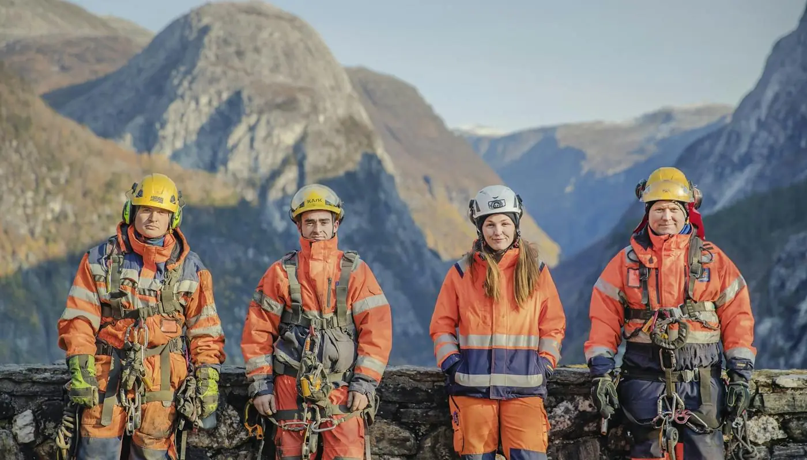

Infrastruktur · hele landet
Vi holder Norge i drift, hele året
Mesta bygger, vedlikeholder og utvikler norsk infrastruktur på oppdrag fra offentlige og private kunder.
Ansatte i234 kommuner
Brøytet i 20253 mill. km
Omsetning 20246,4 mrd.
Illustrasjon: ein veg med midtstripe og eit køyretøy som rører seg. Dekorasjon, ikkje data.
Det vi gjør
Fra daglig drift og vintervedlikehold til bygg, anlegg og grunnundersøkelser.
Drift og vedlikehold
Vedlikehold av vei og infrastruktur, inkludert vinterdrift med brøyting og strøing.
Les merBygg og anlegg
Bygging og utbedring av vei, gang- og sykkelvei og annen infrastruktur.
Les merGrunnundersøkelser
Sjekk av grunnforhold — kvikkleire og forurenset grunn — før du bygger.
Les merDigitalisering
Digitale verktøy og sanntidsdata som gjør driften mer forutsigbar.
Les merLokalt til stede
Tallene er hentet fra Mesta sin egen presentasjon.
234
Kommuner med Mesta-ansatt
3 mill.
Kilometer brøytet i 2025
73
Poeng kundetilfredshet
65,6 %
Ansatte i norske kommuner

Folk som jobber ute
Mesta har ansatte i store deler av landet. Det er denne lokale tilstedeværelsen som gjør at vi kan rykke ut når været snur, og kjenne forholdene der vi jobber.
- Lokal tilstedeværelse i hele Norge
- Fagarbeidere og prosjektledere
- Eget arbeid med bærekraft og digitalisering
«Jeg har stor variasjon i arbeidsoppgavene og jeg har gode kolleger og fine prosjekter.»
Har dere et oppdrag i infrastruktur?
Ta kontakt, så ser vi på hva vi kan bidra med.